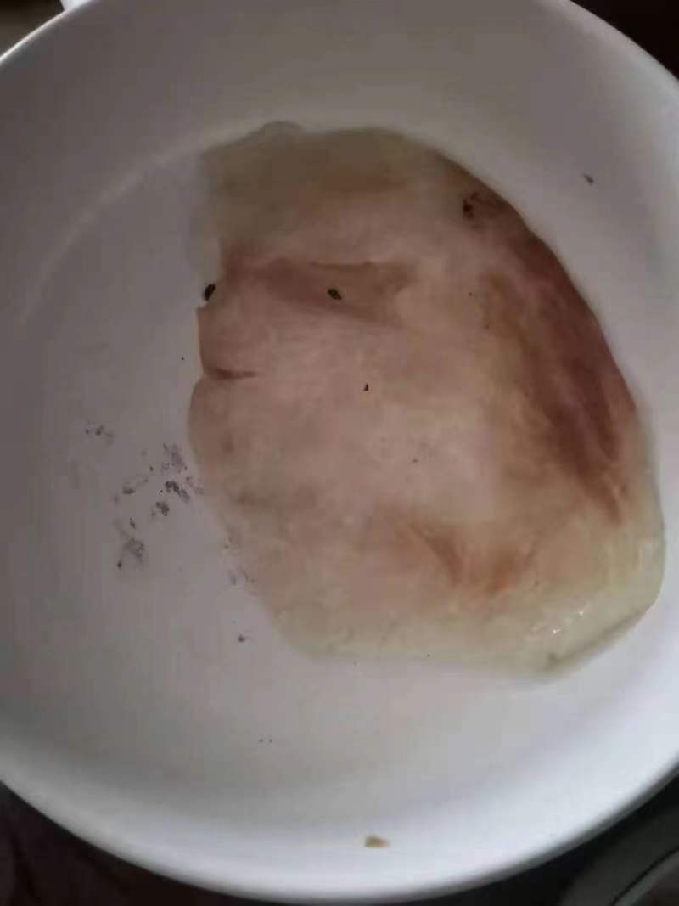
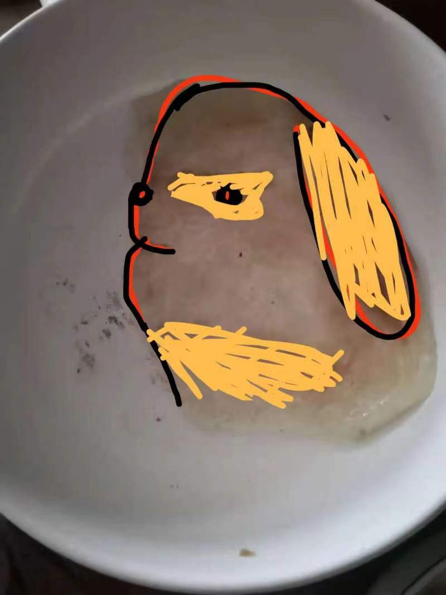

网课的时候，我闲着没事，想煎一个手抓饼吃。所以我就煎了。但是为很快就遇到了一个问题，那就是，我的锅不够大。也就是说，我的锅太小了，装不下一整个手抓饼，这让我很悲伤。因为我真的很想吃手抓饼。所以聪明的我想了一个办法，我把手抓饼撕开变成两半，一半先放在一边，另一半下锅先煎。虽然翻面有点难，毕竟油锅还是挺滑的。但是我是用筷子把饼夹起来翻面的，所以还好。
手抓饼要煎一会才香，所以我得等着，于是我就很无聊。所以我开始盯着手抓饼看，正在我百无聊赖之际，我发现我的手抓饼非常的像一个小狗狗。当然，你也可以觉得他像一只兔子，我也尊重这样的想法，但是，总而言之，我认为这是一只小狗狗。
我把这只可爱的小狗狗分享给我的同学们看，得到了一致好评。于是我打算对他进行一些艺术加工。我用p图软件对他进行了一些二次创作。虽然我觉得原图已经非常完美了，但我觉得我二次创作的版本更加的可爱，而且更容易看出来是一只狗狗。
我对这件作品感到非常的满意。因为他看起来比原来要更加酷炫一些。这件作品也受到了同学们的一致好评。作为一只狗狗，它已经超越了百分之九十九的狗狗了。但是我还不能就此满足。于是，为了让更多的人了解到，世界上还有这样一只长得像狗狗的手抓饼，我为它编写了一个网页。于是就有了你眼前这个网页。